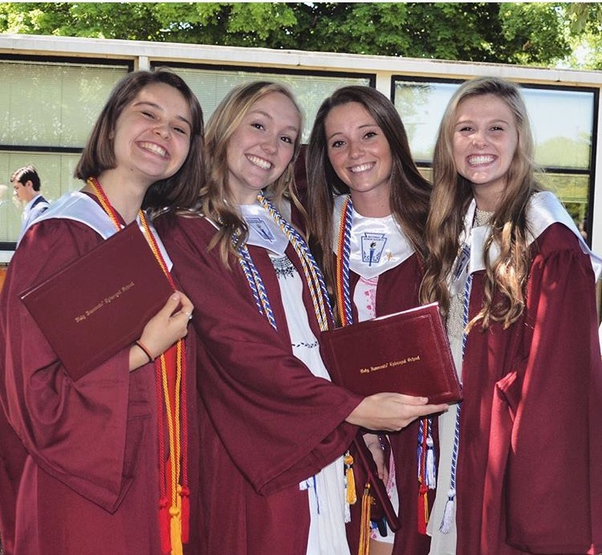

Holy Innocents' Episcopal School

I attended High school at Holy Innocents' Episcopal School in Atlanta, Georgia. I was an Alpha Omega there, meaning that I attended the entire way through. I began Holy Innocents' my Pre-K year and I graduated in 2016. I am very thankful for that learning enviroment, the teachers were incredibly skillful and I was surrounded by people that were incredibly hard working. I met some of my best friends there, those who are featured in our graduation photo. On the far left is Johnna, she was new freshman year and we became very close almost immediately. Next to her is Kendall, she came in 5th grade from Kansas but I didn't become friends with her until high school. Between Kendall and I is Kasey. Kasey also came freshman year and is one of my very close friends.
The education I recieved at Holy Innocents' helped give me the skills to be successful in the future. I took several AP classes in my time there as well as being active in many clubs and honor societies. I think the college workload would have been a lot harder of an adjustment had I not had a hard workload in highschool also. I am thankful that I took hard classes then so it was not shocking when I got here.
A Table of Highschool Workload
| AP Classes | Clubs and Societies |
|---|---|
|
|
Click here to go back to the home page.Home Click here to see about my college education UGA